Στην διεύθυνση https://e-proxeneio.mfa.gr/ypex επιλέγετε «Σύνδεση» και «Είσοδος Πολίτη».
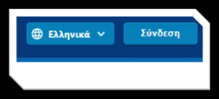
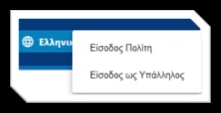
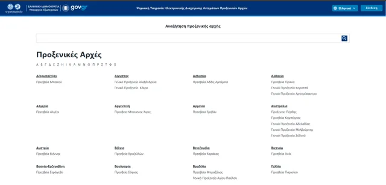
Κατόπιν επιλέγετε τρόπο εισόδου:
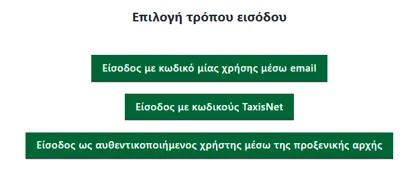
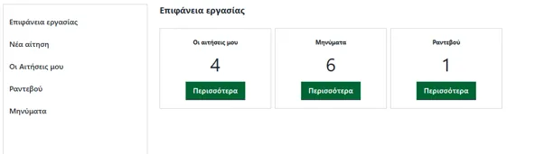
Επιλέγετε «Νέα αίτηση» (στο μενού αριστερά) και κατόπιν το προξενείο στο οποίο ανήκετε:
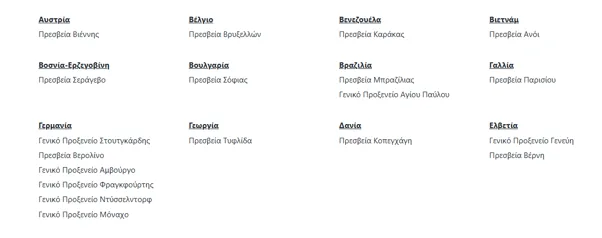
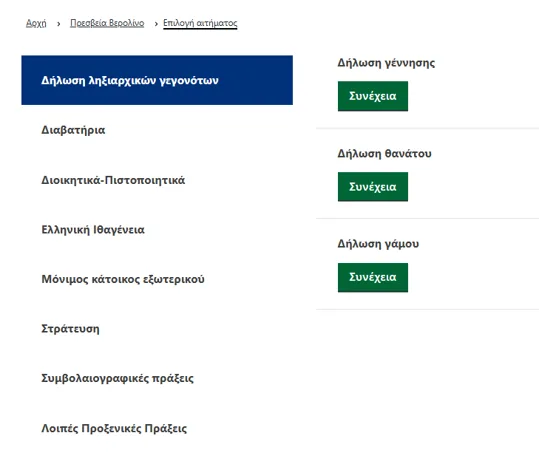
Τέλος επιλέγετε από το μενού το είδος της αίτησης, συμπληρώνετε τα στοιχεία και τα δικαιολογητικά που ζητούνται σε αυτήν και την υποβάλετε.
Από την στιγμή που υποβάλετε την αίτηση μπαίνετε πάντα με τον ίδιο τρόπο στον λογαριασμό σας και ελέγχετε τόσο την αίτηση (στο σημείο Ιστορικό αίτησης), όσο και τα μηνύματα. Εκεί περιγράφονται η εξέλιξη και τυχόν διορθώσεις ή συμπληρώσεις που πρέπει να κάνετε στην αίτησή σας.
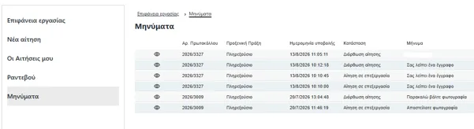
Ανοίγοντας την αίτηση βλέπετε τα στοιχεία της:
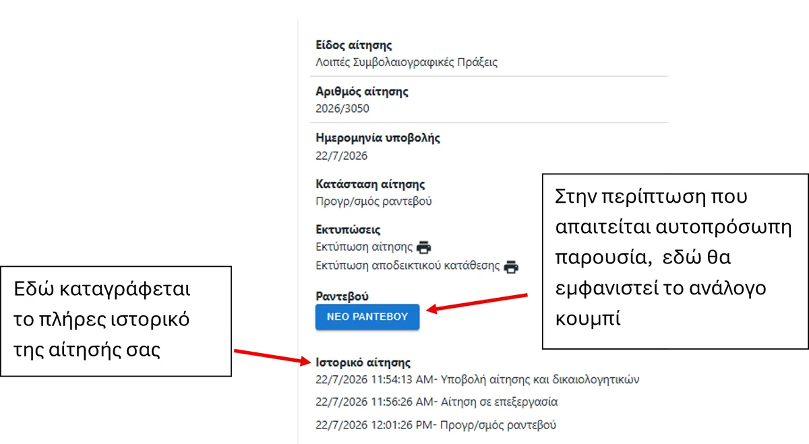
Για να κλείσετε ραντεβού θα πρέπει απαραιτήτως πρώτα να συμπληρώσετε την αίτησή σας στο e-proxeneio. Αν για τη διεκπεραίωσή της απαιτείται αυτοπρόσωπη παρουσία, θα σας δοθεί μέσα από αυτήν, κατά το στάδιο της επεξεργασίας της, η δυνατότητα να κλείσετε ραντεβού. Σε αυτή την περίπτωση θα εμφανιστεί στην αίτησή σας ένα κουμπί, όπως δείχνει η εικόνα.
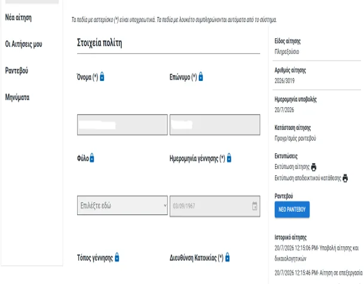
Πατώντας το θα εμφανιστεί η επόμενη εικόνα, με τις ημερομηνίες και τις ώρες που είναι διαθέσιμες:
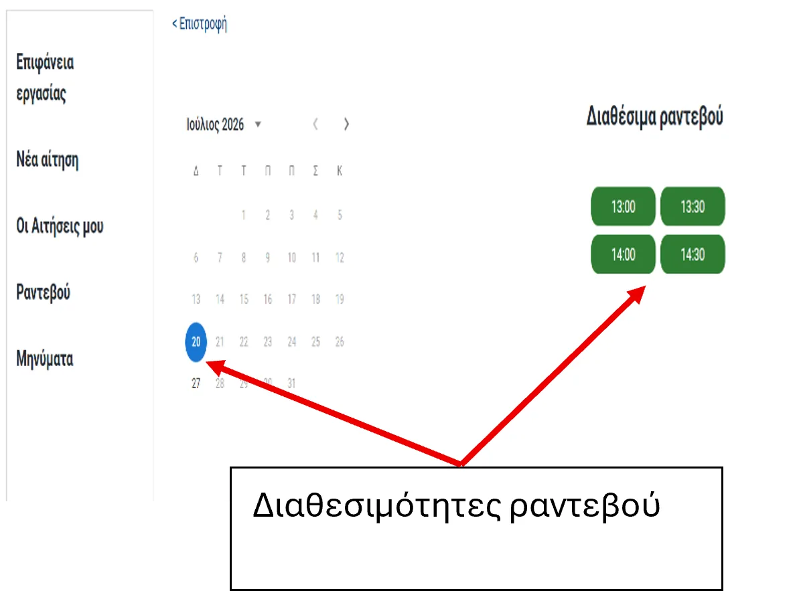
Αν για οποιοδήποτε λόγο χρειαστείτε κάποια διευκρίνιση, μπορείτε — μέσα από την αίτησή σας και πάλι — να αποστείλετε το αίτημά σας προς την υπηρεσία που διεκπεραιώνει την αίτησή σας:
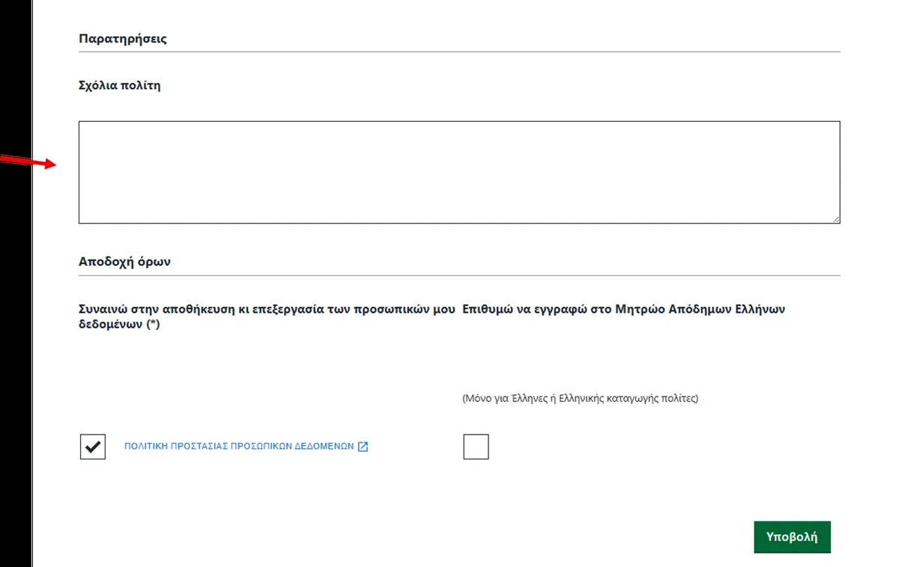
Στην περίπτωση που η αίτησή σας χρειάζεται διόρθωση, θα σας αποσταλεί μήνυμα το οποίο θα φαίνεται:
Παρακαλούμε να ελέγχετε κατά περιόδους και τα τρία, γιατί ορισμένες φορές τα email μπορεί να καθυστερήσουν ή και να τοποθετηθούν στα ανεπιθύμητα (spam) από τον πάροχο του ηλεκτρονικού σας ταχυδρομείου.
Το μήνυμα στον χώρο του e-proxeneio θα είναι όπως στην εικόνα, και θα μπορείτε να ανοίξετε την αίτησή σας πατώντας το ματάκι πράσινο βελάκι:
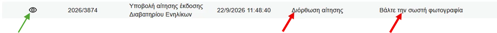
Μέσα στην αίτησή σας, στο κάτω μέρος, θα υπάρχει χώρος για τη δική σας απάντηση:
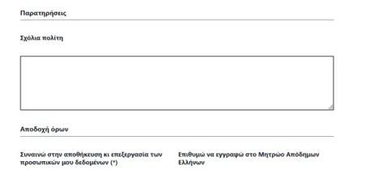
Αμέσως πιο κάτω θα υπάρχει νέος χώρος όπου θα φαίνονται:
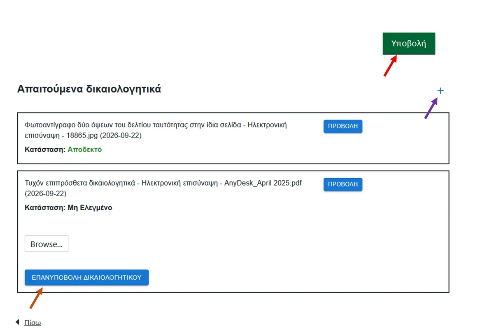
Αν δεν πατήσετε το κουμπί «Υποβολή», καμία διόρθωση δεν θα φανεί στην αίτησή σας και δεν θα μπορεί να προχωρήσει η διαδικασία από την πλευρά της Αρχής.
Rufen Sie https://e-proxeneio.mfa.gr/ypex auf und wählen Sie „Σύνδεση" (Anmelden) und anschließend „Είσοδος Πολίτη" (Bürgeranmeldung).
Wählen Sie anschließend die Anmeldeart:
(Anmeldung mit Einmalcode per E-Mail)
(Anmeldung mit TaxisNet-Zugangsdaten)
Wählen Sie „Νέα αίτηση" (Neuer Antrag, im Menü links) und anschließend das Konsulat, zu dem Sie gehören:
Wählen Sie schließlich im Menü die Art des Antrags, füllen Sie die Angaben aus, fügen Sie die verlangten Unterlagen bei und reichen Sie den Antrag ein.
Nach der Einreichung melden Sie sich immer auf dieselbe Weise in Ihrem Konto an und prüfen sowohl den Antrag (unter „Ιστορικό αίτησης" – Antragsverlauf) als auch die Nachrichten. Dort werden der Bearbeitungsstand sowie etwaige Korrekturen oder Ergänzungen beschrieben, die Sie an Ihrem Antrag vornehmen müssen.
Wenn Sie den Antrag öffnen, sehen Sie seine Angaben:
Um einen Termin zu vereinbaren, müssen Sie unbedingt zuerst Ihren Antrag im e-proxeneio ausfüllen. Ist für die Bearbeitung persönliches Erscheinen erforderlich, erhalten Sie im Laufe der Bearbeitung über den Antrag selbst die Möglichkeit, einen Termin zu buchen. In diesem Fall erscheint in Ihrem Antrag eine Schaltfläche, wie die Abbildung zeigt.
Wenn Sie darauf klicken, erscheint die folgende Ansicht mit den verfügbaren Tagen und Uhrzeiten:
Falls Sie aus irgendeinem Grund eine Rückfrage haben, können Sie – ebenfalls über Ihren Antrag – Ihr Anliegen an die Stelle senden, die Ihren Antrag bearbeitet:
Muss Ihr Antrag korrigiert werden, erhalten Sie eine Nachricht, die angezeigt wird:
Bitte prüfen Sie regelmäßig alle drei Stellen, da sich E-Mails manchmal verzögern oder von Ihrem E-Mail-Anbieter in den Spam-Ordner verschoben werden können.
Im e-proxeneio sieht die Nachricht wie in der Abbildung aus. Sie öffnen Ihren Antrag über das Augensymbol grüner Pfeil:
In Ihrem Antrag finden Sie unten einen Bereich für Ihre Antwort:
Direkt darunter erscheint ein weiterer Bereich mit:
Wenn Sie nicht auf „Υποβολή" klicken, wird keine Korrektur in Ihrem Antrag sichtbar und die Behörde kann das Verfahren nicht fortsetzen.